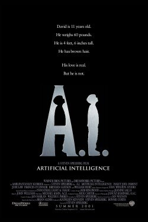
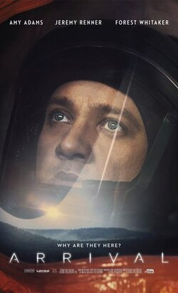
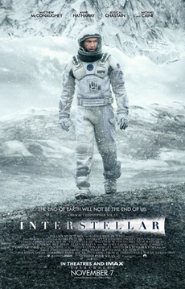
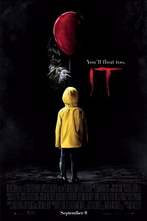
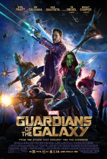

Filme 01: A. I. - Inteligência Artificial - 2001 
A. I. - Inteligência Artificial é um filme de ficção científica dramático estadunidense de 2001 dirigido por Steven Spielberg. Com o roteiro de Spielberg e a história concebida por Ian Watson, o filme é vagamente baseado no conto de 1969 "Supertoys Last All Summer Long" de Brian Aldiss. Situado em uma sociedade futurista, o filme é estrelado por Haley Joel Osment como David, um andróide infantil exclusivamente programado com a capacidade de amar; Jude Law, Frances O'Connor, Brendan Gleeson e William Hurt estrelam em papéis coadjuvantes.
Filme 02: A Chegada - 2016 
Seres extraterrestres chegam em doze naves e pousam em doze pontos diferentes da Terra. Após as autoridades americanas perceberem que eles querem fazer contato, a Dra. Louise Banks (Amy Adams), uma renomada linguista que ajudara o Estado anteriormente, em conjunto com o experiente físico Ian Donnelly (Jeremy Renner), são procurados por militares para interagirem com as criaturas, traduzir os sinais e desvendar se os alienígenas representam uma ameaça ou não. Ambos são pressionados a descobrir o propósito dos extraterrestres o mais rápido possível, assim como outras onze equipes de países onde as naves pousaram. Porém, os interesses políticos, a corrida pela supremacia, o medo do desconhecido e as diferenças culturais entrarão no caminho da ciência e apenas Louise tem a chave para desvendar esse mistério.
Filme 03: Interestelar - 2014 
Interestelar é um filme anglo-americano de ficção científica dirigido por Christopher Nolan e estrelado por Matthew McConaughey, Anne Hathaway, Jessica Chastain, Bill Irwin, Mackenzie Foy, Matt Damon, John Lithgow e Michael Caine. Ele conta a história de uma equipe de astronautas que viaja através de um buraco de minhoca à procura de um novo lar para a humanidade. Os irmãos Christopher e Jonathan Nolan escreveram o filme unindo ideias do primeiro com um roteiro que o segundo havia escrito em 2007. Nolan foi o produtor junto com sua esposa Emma Thomas e com Lynda Obst. O físico teórico Kip Thorne, cujo trabalho inspirou o filme, trabalhou como consultor científico e como produtor executivo.
Filme 04: It - A Coisa - 2017 
It - A Coisa, é um filme de terror sobrenatural norte-americano de 2017, dirigido por Andy Muschietti, baseado no livro homônimo de 1986, escrito por Stephen King. O roteiro adaptado é de Chase Palmer, Cary Fukunaga e Gary Dauberman. Conta a história de sete crianças na cidade fictícia de Derry, que são aterrorizadas por uma criatura chamada Pennywise.
Filme 05: Vingadores: Ultimato - 2019  Vingadores: Endgame é um filme de super-herói americano de 2019, baseado na equipe Vingadores da Marvel Comics. Produzido pela Marvel Studios e distribuído pela Walt Disney Studios Motion Pictures, é a sequência direta de Avengers: Infinity War (2018) e o vigésimo segundo filme do Universo Cinematográfico Marvel (UCM). No filme, os membros sobreviventes dos Vingadores e seus aliados trabalham para reverter os danos causados por Thanos em Infinity War.
Vingadores: Endgame é um filme de super-herói americano de 2019, baseado na equipe Vingadores da Marvel Comics. Produzido pela Marvel Studios e distribuído pela Walt Disney Studios Motion Pictures, é a sequência direta de Avengers: Infinity War (2018) e o vigésimo segundo filme do Universo Cinematográfico Marvel (UCM). No filme, os membros sobreviventes dos Vingadores e seus aliados trabalham para reverter os danos causados por Thanos em Infinity War.
Filme 06: Guardiões da Galáxia Vol. 3 - 2023 
No filme, os Guardiões embarcam em uma missão para proteger Rocket do Alto Evolucionário. Eles devem enfrentar novos inimigos e desafios enquanto tentam salvar seu amigo e descobrir mais sobre o passado de Rocket. O filme explora temas de amizade, sacrifício e redenção, enquanto os Guardiões enfrentam seus próprios demônios internos e lutam para proteger uns aos outros. O filme é conhecido por seu humor característico, trilha sonora nostálgica e momentos emocionais que tocam o coração dos fãs.